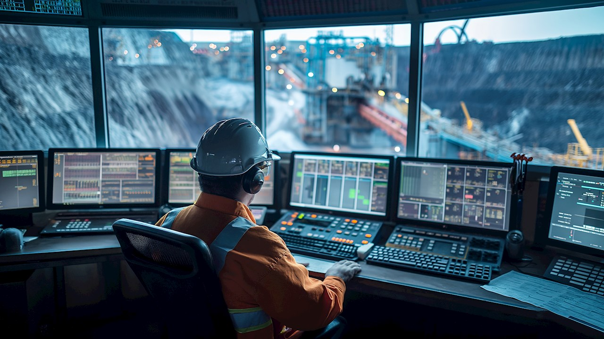
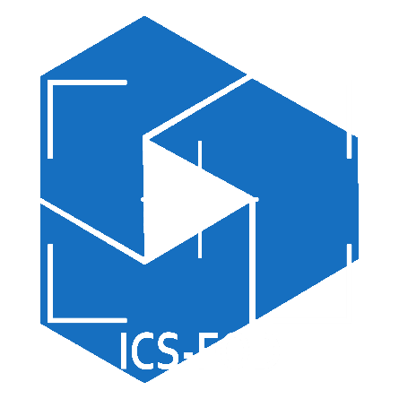
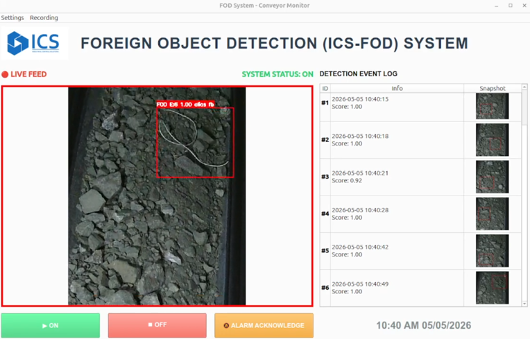

Удирдлагын системийн оновчлол
DeltaV, PLC болон SCADA системийн хараат бус үнэлгээ хийж, үйлдвэрлэлийг хамгаалах эрэмбэлсэн засварын төлөвлөгөө боловсруулна.
Найдвартай байдал
Аюулгүй байдал
Индастриал Контрол Солюшнс ХХК
Индастриал Контрол Солюшнс ХХК нь олон улсын жишигт нийцсэн үйлдвэрлэлийн автоматжуулалт, процессын удирдлага, хиймэл оюун болон цахим шилжилтийн шийдлүүдээр хүнд, хөнгөн болон бусад үйлдвэрүүдэд үйлдвэрлэлийн үр ашгаа нэмэгдүүлэхэд нь тусалдаг.

Уул уурхай ба үйлдвэрлэлийн автоматжуулалтын туршлага
Удирдлагын өрөө, SCADA, хэмжүүрийн мэдлэг
Олон улсын стандарттай түргэн хариу инженерүүд
Бидний хүргэх үнэ цэн
Бид үйлдвэрийн аюулгүй ажиллагаа болон бүтээмжийг автоматжуулалт болон удирдлагын системийн оновчлолоор хэмжигдэхүйц сайжруулж, үйл ажиллагааны тулгамдаж буй сорилтуудыг урт хугацааны тогтвортой өсөлт болгон хувиргадаг.
Шийдлүүд
Бид байгууллага бүрийн үйл ажиллагаанд тохирсон автоматжуулалт, удирдлагын систем, хиймэл оюуны шийдлүүдийг санал болгодог. Олон улсын болон Монголын уул уурхайн салбарт ажилласан 16 гаруй жилийн туршлага дээр тулгуурлан үйлдвэрлэлийн салбар дахь байгууллагуудад шаардлагатай дэмжлэгийг түргэн шуурхай үзүүлж, найдвартай бодит үр дүнг санал болгохоос гадна урт хугацааны тогтвортой харилцаагаар ханган ажиллаж байна.
DeltaV, PLC болон SCADA системийн хараат бус үнэлгээ хийж, үйлдвэрлэлийг хамгаалах эрэмбэлсэн засварын төлөвлөгөө боловсруулна.
Бизнесийн үндэслэлтэй удирдлагын өгүүлэмж, P&ID шинэчлэл, шаталсан CAPEX/OPEX зөвлөмж.
PID тохируулга, APC, хамгаалалтын холбоосоор хэлхээг тогтворжуулж зогсолт ба гар ажиллагааг бууруулна.
ISA-18.2 дохиоллын стратеги, үүрэгт суурилсан HMI, ослоос хамгаалах ажиллагааны журам.
Чухал мэдрэгчүүдийг зураг төслийн хязгаарт барих сонголт, тохируулга, төлөв байдлын хяналт.
Удирдлага ба супервайзеруудыг нэг эх сурвалжтай болгох өгөгдлийн урсгал, KPI самбар.
Хиймэл оюуны шийдлүүд
Бид уул уурхайн үйл ажиллагаанд аюулгүй байдлыг сайжруулж, зогсолтын хугацааг багасгаж, бүтээмжийг нэмэгдүүлэх хиймэл оюунт машин харааны шийдлүүдийг хөгжүүлдэг. Бидний хиймэл оюуны загварууд нь уул уурхайн өгөгдөл дээр сургагдсан бөгөөд манай бүтээгдэхүүнүүд нь уул уурхайн хүнд нөхцөлд ажиллахад зориулагдсан.

Гадны биет илрүүлэх систем
ICS-FOD нь туузан дамжуурга дээрх гадны биетийг хүний оролцоогүй илрүүлэх хиймэл оюунд суурилсан хяналтын систем юм. ICS-FOD систем нь аюултай гадны биетийг илрүүлж, эвдрэл гэмтэл учрахаас өмнө операторт мэдээлэх эсвэл туузан дамжуургыг зогсоох хүртэл шаардлагатай арга хэмжээг авдаг. Ингэснээр өртөг ихтэй тоног төхөөрөмжийн эвдрэл гэмтэл болон төлөвлөөгүй зогсолтоос урьдчилан сэргийлэх боломжтой юм.

Уламжлалт метал илрүүлэгч илрүүлж чаддаггүй метал биет болон хөлдсөн хүдэр гэх мэт хэт том биетийг илрүүлдэг.
Гадны биет камерын харах талбарт орсноос илрүүлэн түгшүүрийн дохио өгөх хүртэл хугацаа 1 секундээс бага байна.
Оператор болон хүний оролцооноос хараат бус бие даан ажилладаг.
Хүргэлтийн арга
Дохиоллын ачаалал, контурын төлөв, хэмжүүрийн найдвартай байдал, HMI ашиглахад хялбар эсэхийг хамарсан үнэ төлбөргүй үнэлгээ хурдан сайжруулалтыг тодорхойлно.
Тодорхой үе шат, эрсдэлийн хяналт, үйлдвэрлэлд бэлэн туршилттай талбай дээр, алсаас эсвэл хосолсон хүргэлт.
Манай баг
Монголын үйлдвэрлэлийн салбарт үр дүн гаргасан автоматжуулалт, цахилгаан, хиймэл оюун, өгөгдлийн мэргэжилтнүүд.
Үүсгэн байгуулагч — Автоматжуулалтын инженер
Уул уурхай, үйлдвэрлэлийн автоматжуулалтын салбарт 16 жилийн туршлагатай автоматжуулалтын мэргэжилтэн. Emerson DeltaV DCS удирдлагын систем, Metso OCS 4-D ахисан төвшний удирдлагын систем, Aveva PI мэдээллийн бааз систем, процессийн хяналт, тасралтгүй сайжруулалтын чиглэлээр мэргэшсэн.
Өмнө нь Оюу Толгой (Монгол) болон Kennecott Utah Copper (АНУ) уурхайн автоматжуулалтын систем ба оновчлолын төслүүдийг хэрэгжүүлж, удирдаж ажилласан. ОХУ-ын Уралын Уул Уурхайн Их Сургуулийг "Технологийн процесс ба үйлдвэрлэлийн автоматжуулалт" мэргэжлээр төгссөн.
Үүсгэн байгуулагч — Цахилгаан ба автоматжуулалтын инженер
Баяжуулах үйлдвэрийн засвар, найдвартай ажиллагаа, автоматжуулалтын чиглэлээр 8 гаруй жилийн туршлагатай. Нам/дунд хүчдэлийн систем, PLC програмчлал, хэмжүүр, DeltaV удирдлагын системийн эксперт.
CAPEX сайжруулалт, хөрөнгийн менежмент, тоног төхөөрөмжийн үйлдвэрлэгчидтэй OEM хамтын ажиллагаагаар тоног төхөөрөмжийн найдвартай ажиллагааг сайжруулж, зогсолтыг бууруулсан туршлагатай. ШУТИС-ийг "Үйлдвэрийн автоматжуулалт" мэргэжлээр төгссөн.
Өгөгдөл ба програм хангамжийн инженер (Зайнаас ажилладаг)
Өгөгдлийн шугам ба ETL процессийн боловсруулалт, арчилгаанд туршлагатай. Python, SQL, C# хэлээр чадварлаг, өгөгдлийн загварчлал, шинжилгээ, дүрслэлд туршлагатай. Хүнд өгөгдөл интеграц хийх, техникийн болон техникийн бус талуудад ойлгомжтой тайлагнах чадвартай.
Монгол Улсын Их Сургуулийн Микроконтроллерийн програмчлал, Торонто Менежментийн Сургуулийн Өгөгдлийн шинжилгээ, Найагара Коллежийн Компьютерийн програмчлал мэргэжлийг тус тус эзэмшсэн.
AI болон Computer Vision инженер
Робот техник, 3D хараа, мэдрэгчийн калибровк, embedded систем болон машин сургалтын чиглэлээр 10 гаруй жилийн туршлагатай AI болон computer vision инженер. Ажлын хүрээ нь 3D сэргээн байгуулалт, олон мэдрэгчийн бүртгэл ба уялдуулалт, ROS-д суурилсан робот техник, байршил тогтоолт, embedded vision оновчлол, зураг болон видео боловсруулалтыг хамардаг.
Sony, Kailas Robotics болон стартап компаниудад ажилласан туршлагатай тэрээр камеруудыг бодит ертөнцийг харах, ойлгох, хэмжих чадвартай болгох гүнзгий техникийн мэдлэг, ур чадварыг эзэмшсэн.
Холбоо барих
Бид тан руу эргэн холбогдох болно.